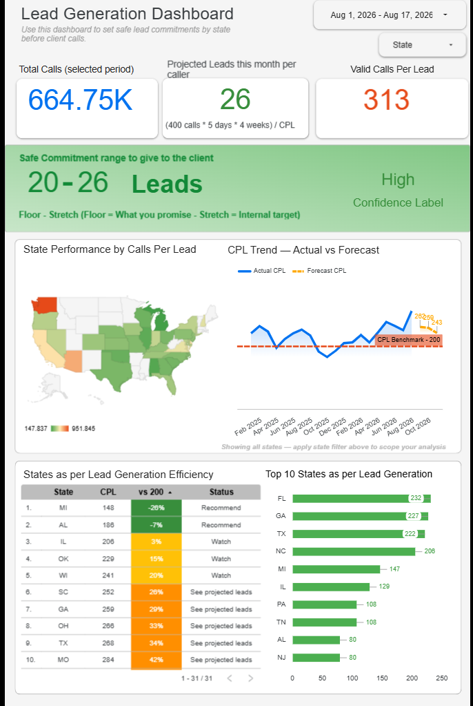
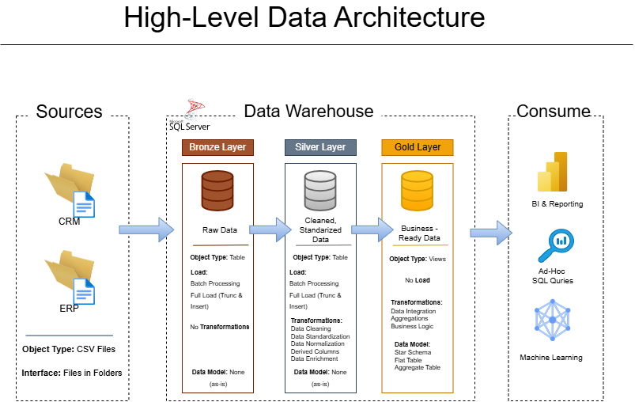
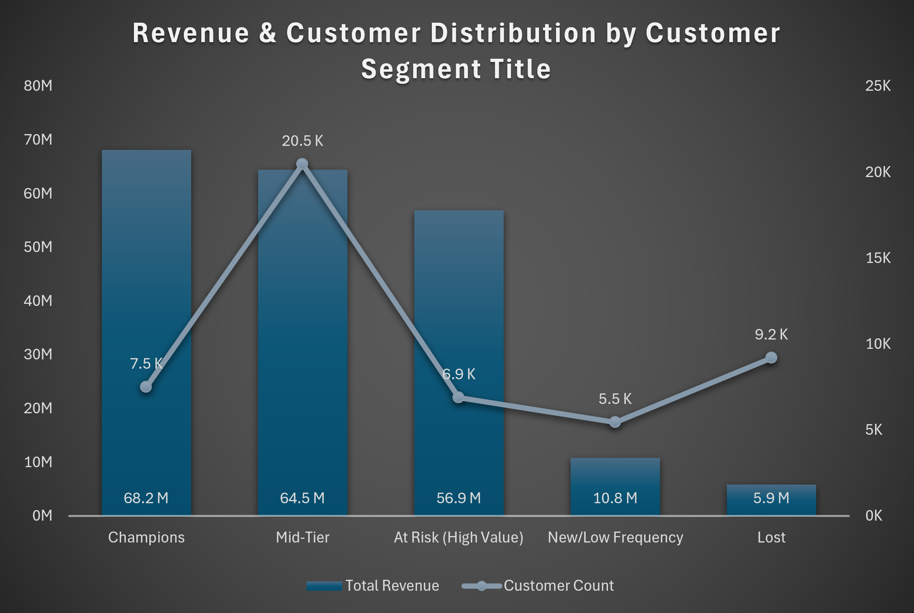
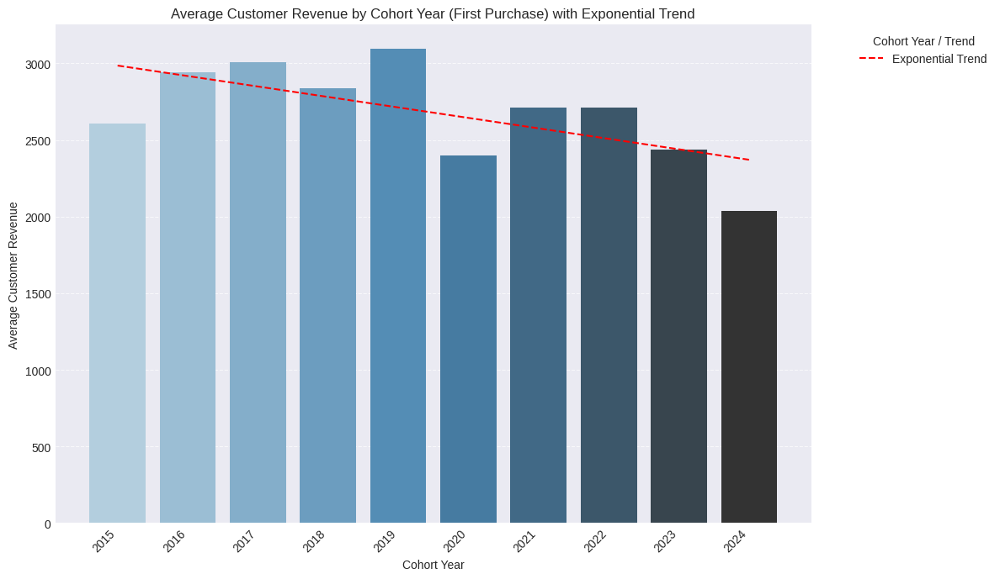
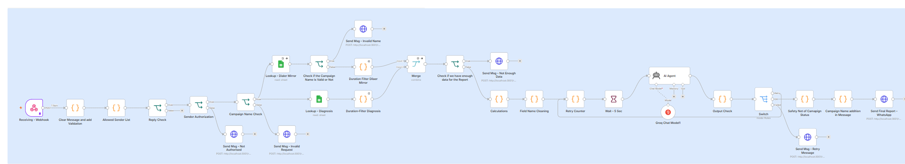

SQL, Power BI and Looker Studio work built around real business questions. I check numbers against source logic before I share them, and I say what a number doesn't prove as plainly as what it does.
I lead data and reporting for a real estate BPO's outbound dialer operations, where I build campaign diagnostics, GM-facing reporting, and KPI dashboards on top of BigQuery, Power BI, and Looker Studio. Outside that, I build SQL and automation projects to keep pushing past what day-to-day operational reporting requires.
Each project below began with something a person had to decide: how many leads to promise a client, which customers to win back, which source system to believe.
On the RFM project that meant testing for NULLs and for ties at the score boundaries. On the lead dashboard it meant tracing the commitment formula back to the live CPL feed.
Every case study ends with its limitations: what wasn't measured, what wasn't validated, what the data can't support.
A mix of production work and independent builds. Each flagship project below includes the reasoning, the numbers I verified, and the limitations I'd want you to know.

Managers get a floor-to-stretch lead range for each state before every client call, replacing one flat national CPL average.

CRM and ERP exports with conflicting formats resolved into one star schema, with the sales amount recalculated instead of trusted.

LTV-only segmentation couldn't tell an active high spender from one who'd already gone quiet. Built RFM scoring in PostgreSQL to find and size the gap.

Segmented customers by LTV, tracked cohort revenue trends, and measured retention drop-off to find where the business was structurally leaking customers.

Manual cross-referencing of two tracking sheets was the only way to get campaign performance data. Built an n8n pipeline that turns a WhatsApp message into an on-demand report.